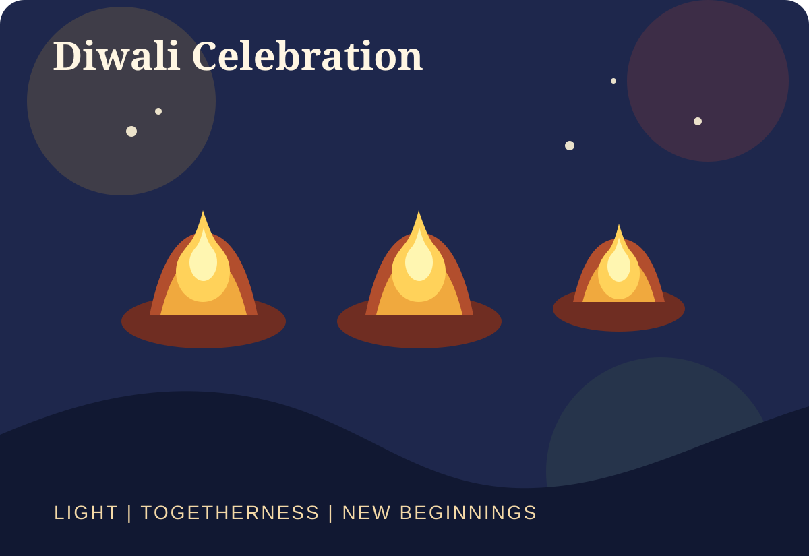
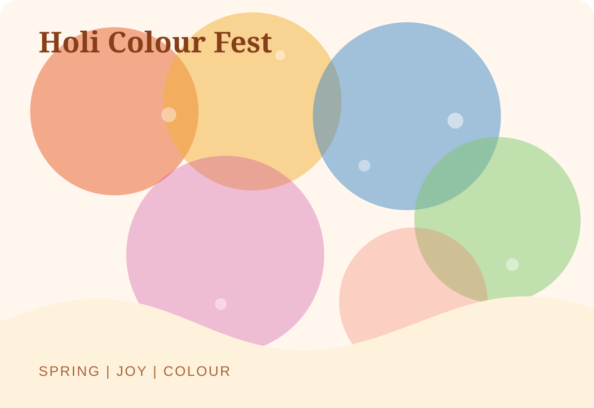
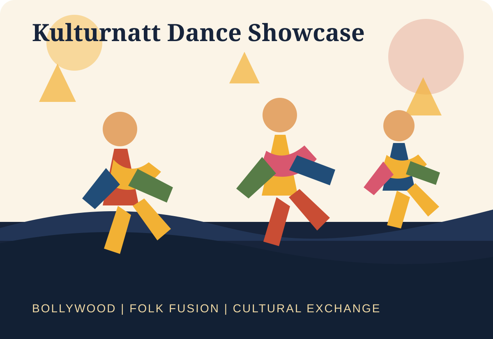
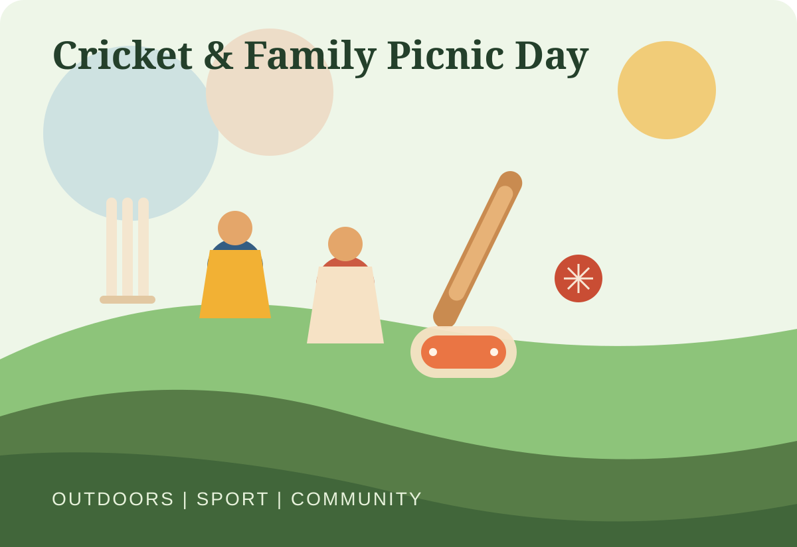

Diwali Celebration
A festival of lights centered on family, joy, music, food, and a sense of new beginnings.
Community. Culture. Celebration.
Vasteras Indians brings people together through festivals, performances, family-friendly meetups, food, music, and shared traditions while building a vibrant bridge between Indian culture and life in Sweden.
Community rhythm
From Diwali gatherings and dance showcases to colour-filled spring celebrations and summer family days, the community keeps traditions alive in a joyful local setting.
About the group
The Vasteras Indians community is a place to meet, celebrate, and stay connected. Public community references in Vasteras highlight Diwali celebrations, Indian cultural dance performances, and the city’s long-standing cricket tradition, all reflecting a shared love of heritage and togetherness.
This website is designed as a simple community front door: easy to browse, easy to maintain, and ready for GitHub Pages hosting with no build process required.
Flagship events
These are some of the best-known themes and celebration formats associated with the Indian community in Vasteras.

A festival of lights centered on family, joy, music, food, and a sense of new beginnings.

A bright spring gathering full of colours, laughter, games, and shared celebration across generations.

Cultural dance performances that blend Indian traditions, Bollywood energy, and a spirit of intercultural exchange.

Relaxed outdoor meetups where sport, conversation, and shared meals bring the community together during the warmer months.
Why people join
Discover upcoming celebrations, connect with families and friends, and stay close to the traditions, tastes, music, and stories that make the community feel like home.